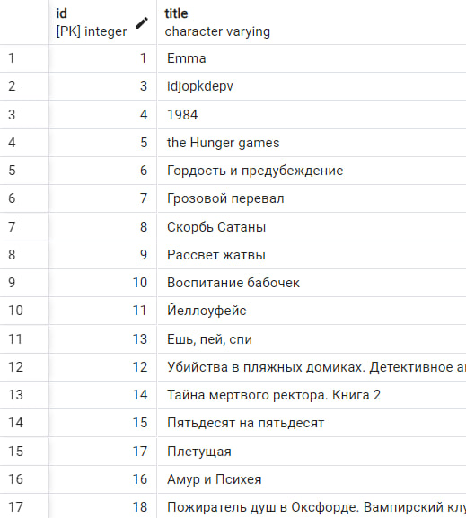
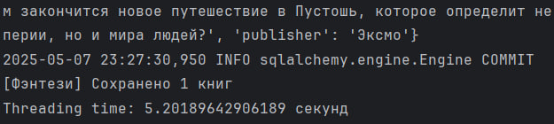
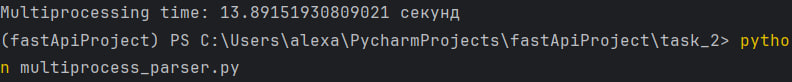
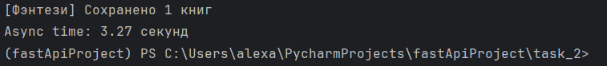

Потоки. Процессы. Асинхронность.
Параллельный парсинг веб-страниц с сохранением в базу данных
Задача
Напишите программу на Python для параллельного парсинга нескольких веб-страниц с сохранением данных в базу данных с использованием подходов threading, multiprocessing и async. Каждая программа должна парсить информацию с нескольких веб-страниц, сохранять ее в базу данных.
Общая информация
Для парсинга был выбран сайт LiveLib - веб-сайт о книгах и социальная сеть читателей книг, - а конкретно, страницы с книгами, принадлежащими пяти различным жанрам. С каждой страницы жанра было решено спарсить по 3 книги.
Были написаны общий код парсинга данных (base.py) и сохранения их в базу данных (db.py) для двух подходов - threading и multiprocessing. Для async использовались отдельные, асинхронные функции.
Сохранение данных в базу:

Threading
- Для каждого URL создаётся отдельный поток (
threading.Thread), в котором вызывается функцияparse_and_save. - Все потоки запускаются параллельно и выполняют запросы к сайту, парсинг и сохранение данных в базу данных.
- Главный поток ждёт завершения всех остальных с помощью
thread.join().
Преимущества:
- Хорош для I/O задач (сетевые запросы, операции с БД)
- Прост в реализации
Недостатки:
- Неэффективен для CPU-bound задач (например, вычислений)
- GIL мешает масштабируемости
thread_parser.py
import threading
import time
from db import parse_and_save
from base import urls
def thread_parse_and_save(url, genre):
parse_and_save(url, genre)
def run_with_threading():
start_time = time.time()
threads = []
for genre, url in urls.items():
thread = threading.Thread(target=thread_parse_and_save, args=(url, genre))
threads.append(thread)
thread.start()
for thread in threads:
thread.join()
end_time = time.time()
print(f"Threading time: {end_time - start_time} секунд")
if __name__ == "__main__":
run_with_threading()
Результат:

Multiprocessing
- Для каждого URL создаётся отдельный процесс (
multiprocessing.Process), который запускается независимо от других. - Каждый процесс запускает ту же функцию
parse_and_save, что и в потоковой версии. - Процессы не делят память, и каждый работает со своей копией интерпретатора Python.
Преимущества:
- Каждый процесс работает независимо, у него свой GIL
- Полноценный параллелизм (в т.ч. для CPU-bound задач)
- Подходит для тяжелых вычислений
Недостатки:
- Высокие накладные расходы на запуск процессов
- Сложности с синхронизацией и обменом данными
- Запуск новых процессов — ресурсоёмкая операция
multiprocess_parser.py
import multiprocessing
import time
from db import parse_and_save
from base import urls
def process_parse_and_save(url, genre):
parse_and_save(url, genre)
def run_with_multiprocessing():
start_time = time.time()
processes = []
for genre, url in urls.items():
process = multiprocessing.Process(target=process_parse_and_save, args=(url, genre))
processes.append(process)
process.start()
for process in processes:
process.join()
end_time = time.time()
print(f"Multiprocessing time: {end_time - start_time} секунд")
if __name__ == "__main__":
run_with_multiprocessing()
Результат:

Asyncio + aiohttp
- Используется асинхронный подход с
asyncioиaiohttp. - Все HTTP-запросы выполняются одновременно в рамках одного потока, не блокируя выполнение друг друга.
- Для сохранения данных в базу вызывается
save_books_to_dbчерезrun_in_executor, чтобы не блокироватьevent loopсинхронной работой SQLModel.
Преимущества:
- Отлично подходит для массовых сетевых запросов, так как не создаёт потоки или процессы, а управляет выполнением на уровне событийного цикла.
- Минимальные накладные расходы, высокая масштабируемость.
Недостатки:
- Не подходит для CPU-bound задач
- Работа с БД требует аккуратного использования
run_in_executorили асинхронных драйверов
async_parser.py
import asyncio
import aiohttp
from bs4 import BeautifulSoup
from sqlmodel import Session
from models.models import Book
from base import clean_description
from connection import engine
import random
import time
urls = {
"Современная зарубежная литература": "https://www.livelib.ru/genre/Современная-зарубежная-литература",
"Зарубежная классика": "https://www.livelib.ru/genre/Зарубежная-классика",
"Зарубежные детективы": "https://www.livelib.ru/genre/Зарубежные-детективы",
"Фэнтези": "https://www.livelib.ru/genre/Фэнтези",
"Приключения": "https://www.livelib.ru/genre/Приключения"
}
USER_AGENTS = [
"Mozilla/5.0 (Windows NT 10.0; Win64; x64)...",
"Mozilla/5.0 (Macintosh; Intel Mac OS X 10_15_7)...",
"Mozilla/5.0 (X11; Linux x86_64)..."
]
async def fetch(session, url):
headers = {
"User-Agent": random.choice(USER_AGENTS),
"Accept": "...",
"Accept-Language": "...",
"Referer": "..."
}
async with session.get(url, headers=headers, timeout=10) as response:
return await response.text()
async def parse_books_from_genre_page(session, url, genre_name, max_books=3):
books = []
try:
html = await fetch(session, url)
await asyncio.sleep(random.uniform(1.5, 3.0))
soup = BeautifulSoup(html, "html.parser")
book_items = soup.select("li[class*=book-item__item]")[:max_books]
for item in book_items:
try:
title_tag = item.find("a", class_="book-item__title")
author_tag = item.find("a", class_="book-item__author")
if not title_tag or not author_tag:
continue
title = title_tag.text.strip()
author = author_tag.text.strip()
info_table = item.find("table", class_="book-item-edition")
rows = info_table.find_all("tr") if info_table else []
isbn, published_in, publisher = None, None, None
for row in rows:
label = row.find("td", class_="book-item-edition__col1").text.strip()
value = row.find_all("td")[1].text.strip()
if label == "ISBN:":
isbn = value
elif label == "Год издания:":
published_in = int(value)
elif label == "Издательство:":
publisher = value
if publisher:
publisher = publisher.replace('\xa0', ' ').replace('\r', '').replace('\n', '').strip()
publisher = ', '.join(part.strip() for part in publisher.split(','))
description_div = item.find("div", class_="book-item__text")
description = description_div.get_text(separator="\n").strip() if description_div else None
description = clean_description(description)
book_data = {
"title": title,
"author": author,
"genre": genre_name,
"isbn": isbn,
"published_in": published_in,
"publisher": publisher,
"description": description
}
books.append(book_data)
except Exception as e:
print("Ошибка при парсинге книги:", e)
continue
except Exception as e:
print(f"Ошибка при получении HTML: {e}")
return books
def save_books_to_db(books):
with Session(engine) as session:
for book_data in books:
book = Book(**book_data)
session.add(book)
session.commit()
async def async_parse_and_save(session, url, genre):
books = await parse_books_from_genre_page(session, url, genre)
loop = asyncio.get_running_loop()
await loop.run_in_executor(None, save_books_to_db, books)
print(f"[{genre}] Сохранено {len(books)} книг")
async def run_with_async():
start_time = time.time()
async with aiohttp.ClientSession() as session:
tasks = []
for genre, url in urls.items():
tasks.append(async_parse_and_save(session, url, genre))
await asyncio.gather(*tasks)
end_time = time.time()
print(f"Async time: {end_time - start_time:.2f} секунд")
if __name__ == "__main__":
asyncio.run(run_with_async())
Результат:

Результаты тестирования
Примечание: время выполнения немного увеличено - это связано с тем, что после определённого количества запросов сайт начал блокировать доступ, так что была добавлена задержка между запросами. Так, изначальное время парсинга с использованием threading составило примерно 2.26 секунд, multiprocessing - 6.67 секунд, asyncio - 1.07 секунд.
| Подход | Время выполнения | Обоснование | Практическое применение |
|---|---|---|---|
| Threading | ~5.2 сек | Эффективно при небольшом количестве задач I/O. Простая реализация, низкие накладные расходы. | I/O: cетевые запросы, простая многозадачность |
| Multiprocessing | ~13.9 сек | Неэффективен для I/O-задач, накладные расходы делают multiprocessing избыточным в этой задаче. | CPU-интенсивные задачи: тяжёлые вычисления, работа с большими объёмами данных |
| Asyncio + aiohttp | ~3.27 сек | Самый эффективный подход для сетевых I/O-задач. Быстрее других благодаря отсутствию лишнего создания потоков/процессов. | Массовые I/O: API, веб-скрапинг, работа с сокетами |
Выводы
- Асинхронность (
asyncio + aiohttp) показала наилучшие результаты за счёт эффективной работы с сетевыми запросами без создания дополнительных потоков или процессов. Это подход оптимален для задач, связанных с массовыми запросами к сети и базам данных. - Потоки (
threading) — хороший компромисс между простотой и эффективностью. Несмотря на GIL, для I/O-задач они работают достаточно эффективно. - Процессы (
multiprocessing) оказались наименее эффективными в данном контексте. Основные причины — повторная инициализация процессов и высокая стоимость запуска. Этот подход более оправдан для ресурсоёмких расчётов (например, машинное обучение, обработка изображений и т.п.), но не для сетевых запросов.